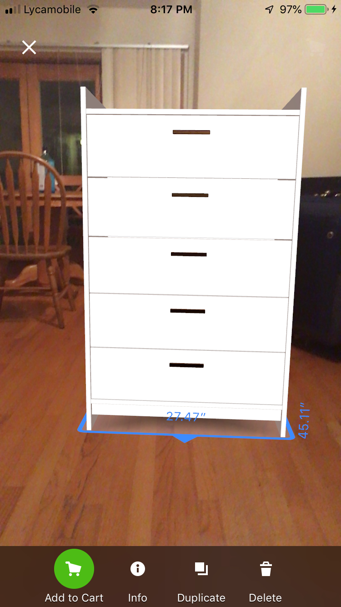
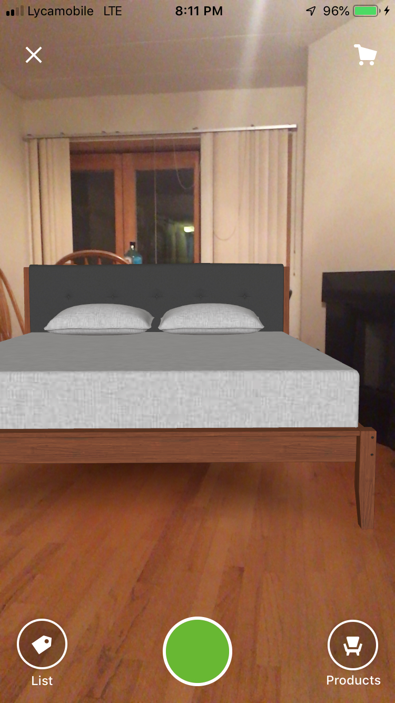
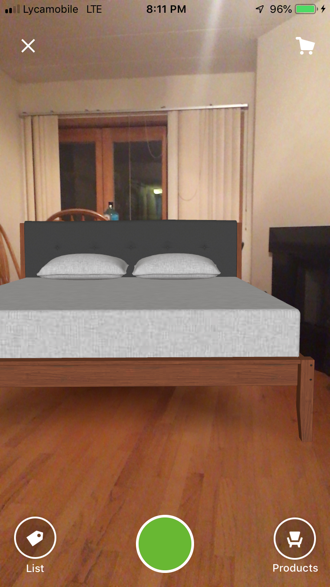

Introduction
Alrighty, here I am back again this week with another task in CS491. So, I am kind of working in a group on this awesome VR project. We are building a series of scenes based on Halloween theme. The task was to scale up everything around the player by a factor of 10. For example, let’s consider the player reading a book which is usually 12 inches wide, 12 inches long when open and let the thickness be 1 inch. You will be pretty comfortable in reading this book. Right?
Let us scale up everything by a factor of 10. So now the book is 10 feet wide and long. While imagining this, I felt like a fly which will trouble the imaginary giant reader sitting on a giant chair. This seems pretty lame but in-fact, worm’s eye view can be amazing sometimes. Let us dive into each aspect.

PROS
Certainly, this makes the life easier for anyone who intents to buy new furniture. People can immediately decide as it places the furniture with scales in your space. This can help someone decide wether or not it wil fit properly in the available space. It also gives proper dimensions on the height which is quite necessary when someone intents to buy a working desk or a Dining Table or a desk in Kitchen.
 
